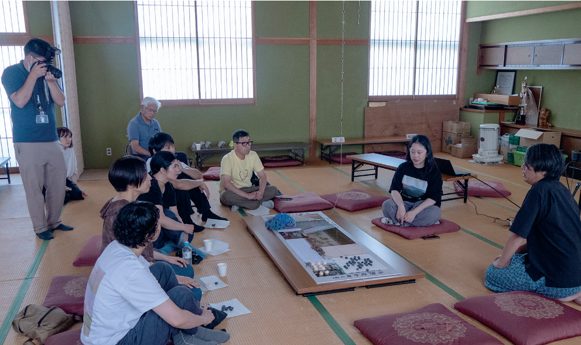
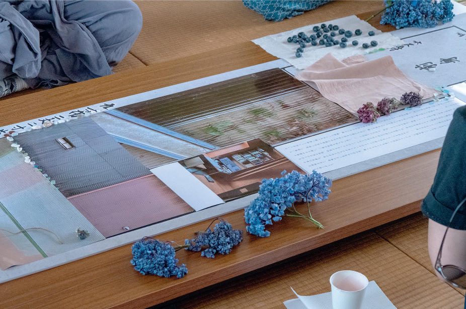
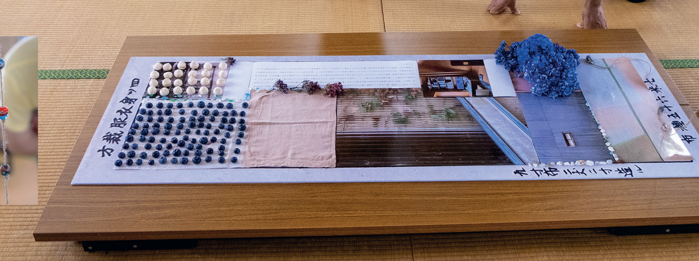

OEMK / HABITAT
Habitat

Interactive installation
Futaomote Onsen Kuminkan, Awara Onsen, Japan
Developed in collaboration with local architect Toshinori Oka, Shell/Habitat brings together fragments of photographic imagery, negative space, oral histories, shared food and flowers, tombo-dama glass beads and found objects.
These elements are organised through a segmented structure inspired by a child's kimono composition discovered in an akiya (vacant house).
As participants gradually take away the food and flowers, photographs and stories of past memories begin to reveal themselves.


Collective publication / In development
OEMK Vol. 1: Habitat
Forthcoming 2027
Habitat is a collective artist publication developed with a group of artists, writers, and thinkers, bringing together different voices around questions of memory, objects, spaces, movement, belonging, and personal histories.
At its centre is an interest in how memory is carried by spaces, objects, materials, and bodies, and how spaces are continuously shaped by the embodied memories and practices that inhabit them.
The histories explored in the publication exist at different scales: from something as intimate and seemingly ordinary as a family recipe to larger family, social, national, or transcultural histories. Small everyday practices, objects, gestures, and fragments can carry histories just as much as events that are formally recorded and archived.
Rather than constructing a single narrative, Habitat brings together different perspectives, experiences, and fragments of knowledge, allowing each contribution to approach these questions from its own position and form.
The publication will take two forms: a printed edition and an online format that explores a non-linear reading experience.
Planned launch / Spring 2027